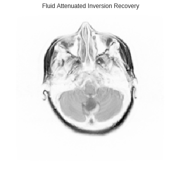
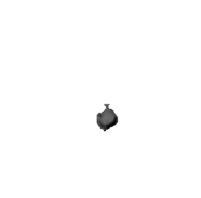
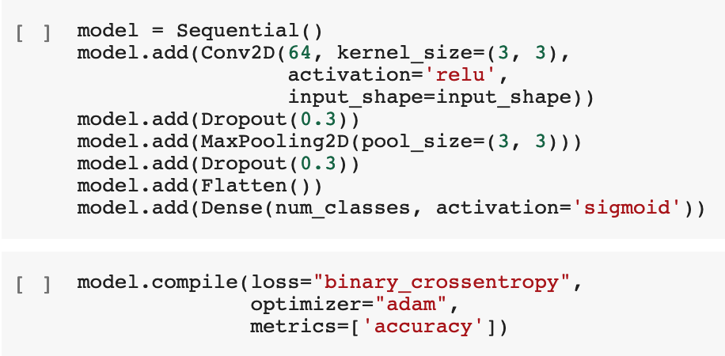
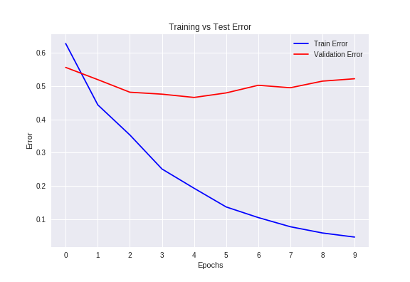
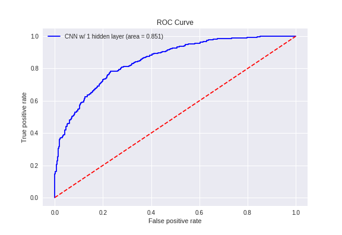

I will soon be graduating with my Master of Biostatistics degree, and I hope to find a career in Data Science. Read more about my life...
First up is an assignment I completed for a class project. The final for my Machine Learning class consisted of taking a dataset and using a machine learning algorithm to predict some outcome. We chose the Wine Review Dataset from Kaggle. Here's a snapshot of the poster we presented on it:
Here is a project where I'm using Convolutional Neural Networks to classify tumors as either benign or malignant by looking at patient MRI scans. The motivation behind this problem is that oncologists may benefit from the aid of neural networks when diagnosing a patient with cancer.
The dataset consists of 110 patients, each with multiple scans for a total of roughly 4000 images. Each image is 256 by 256 pixels, and consists of 3 channels: one for pre-contrast, one for post-contrast, and another for fluid attenuated inversion recovery (FLAIR). Here's an example of what one channel of a scan may look like:
Each image also comes with a mask, which is basically a picture with only binary values where 1's represent the pixel locations where a tumor is located at. Thus, if we combine a picture with its mask, we get images with just the tumor in it. This makes it easier for our model to learn the tumor and not the other noise in the image. By using element-wise multiplication, we get the following image:
Now we can try fitting our model. We split our data into training and test datasets so that we may use the hold-out dataset to evaluate our model. We use a batch size of 64, 10 epochs, a loss function of binary cross- entropy, the Adam optimizer, and an architecture as follows:
After fitting our model, we get an AUC = 0.851 and a validation accuracy = 77.3%.  